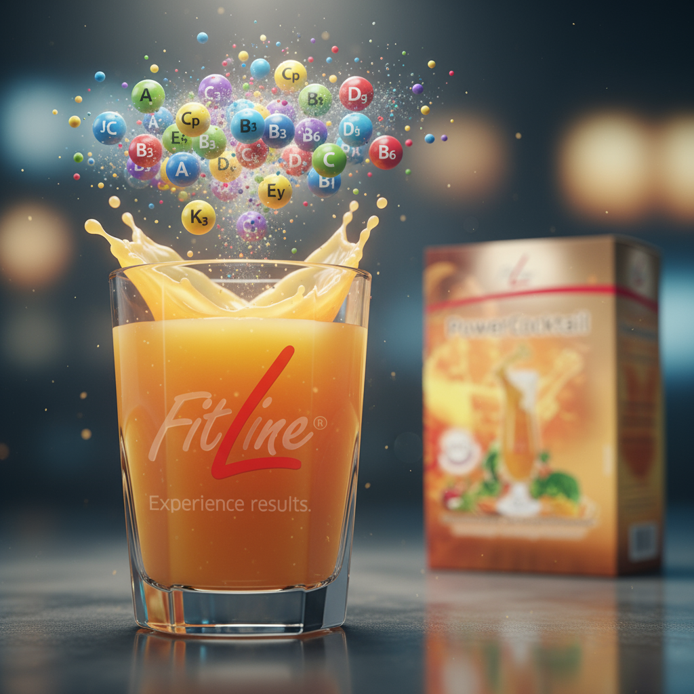
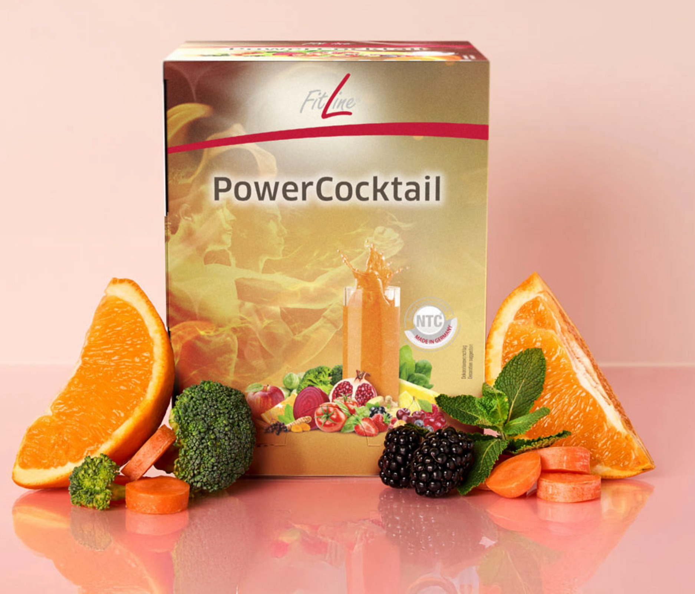
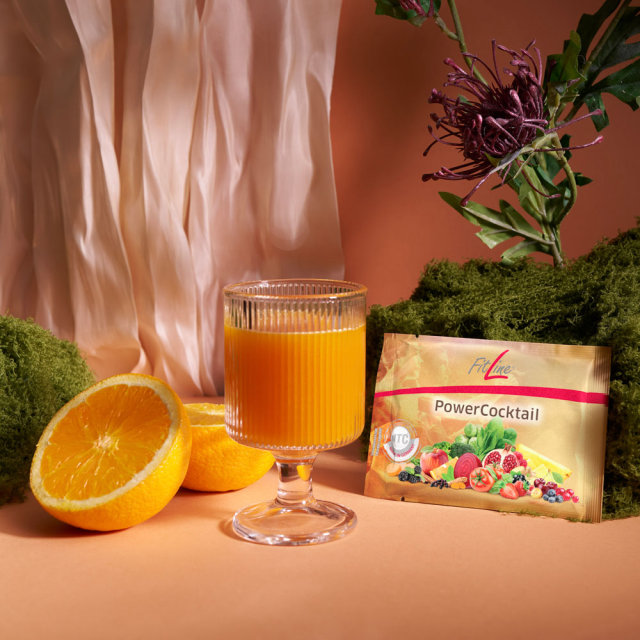

Fundamentul științific, beneficiile și tehnologia din spatele celui mai complex supliment pentru vitalitate și performanță.
Concept, compoziție și tehnologie inovatoare
FitLine PowerCocktail este unul dintre cele mai complexe suplimente dedicate vitalității, imunității și performanței generale, dovedit și recomandat la nivel internațional. Acesta reunește sinergic două produse de top FitLine – Basics și Activize Oxyplus – pentru a susține simultan energia, metabolismul, imunitatea, digestia și claritatea mentală. Fundamentul eficienței sale este conceptul patentat NTC® (Nutrient Transport Concept), care maximizează absorbția și transportul nutrienților direct către celule, acolo unde sunt necesari.

Figura 1: PowerCocktail - un concentrat de nutrienți din natură, optimizat prin știință.
Compoziția PowerCocktail: un ecosistem de nutrienți
Formula sa integrează peste 30 de ingrediente active, creând o sinergie unică:
Matrice de polifenoli: Extracte valoroase din fructe, legume, ierburi și condimente (ceai verde, broccoli, acerola, struguri, turmeric, cireșe, spanac, varză, afine etc.).
Suport digestiv: Fibre solubile și insolubile (inulină, ovăz, mazăre, măr, orez), enzime digestive (milază, lactază, protează, celulază, lipază) și culturi probiotice (L. acidophilus, L. reuteri).
Complex de vitamine și minerale: Include un spectru complet de vitamine B (inclusiv B12 și B6), vitamina C, vitamina E, beta-caroten și seleniu, esențiale pentru metabolismul energetic și funcția imunitară.
Energie și focus: Extract de guarana, o sursă naturală de cofeină, pentru vigilență și performanță mentală.
Polifenolii:
Acționează ca antioxidanți, reduceri de inflamație, reglatori ai activității imunologice (activitate celule T, B, NK, dendritice, macrofage).
Sinergizează cu vitaminele C, E și probiotice chiar la nivelul barierei intestinale, maximizând efectul protector, adaptogen și antiinflamator.
Contribuie la reducerea frecvenței infecțiilor recurente și recuperare accelarată după perioade solicitante.
Efectul sinergic al tehnologiei NTC®:Asigură că nutrienții ajung rapid și eficient la celule, optimizând funcția sistemului imun și răspunsul la stres sau infecții.
Beneficii demonstrate pentru sănătate și performanță
Energie, metabolism și stare mentală
Complexul de vitamine B și guarana sprijină conversia eficientă a alimentelor în energie, contribuind la reducerea oboselii și la optimizarea metabolismului.

Figura 2: Compoziția unică și tehnologia NTC dau unicitatea absolută a acestui produs
Spre deosebire de energizantele sintetice, cofeina naturală din guarana menține vigilența fără efecte adverse. În plus, nutrienții esențiali și probioticele influențează pozitiv axa intestin-creier, aducând beneficii pentru dispoziție, claritate mentală și reziliență la stres.
Sănătatea digestivă și a microbiomului
Fibrele solubile și insolubile din compoziție reglează tranzitul intestinal și acționează ca prebiotice, hrănind flora intestinală benefică. Culturile probiotice (Lactobacillus reuteri și acidophilus) contribuie la echilibrarea microbiomului, un factor esențial pentru o digestie sănătoasă și un sistem imunitar puternic.
Imunitate și protecție antioxidantă pe termen lung
PowerCocktail este proiectat nu doar pentru energie imediată, ci și pentru a construi un sistem de apărare robust pe termen lung.

Figura 3: Mixul de antioxidanți, polifenoli și vitamine din PowerCocktail acționează ca un scut protector pentru celule.
Mecanismele complexe de optimizare a imunității
Protecție antioxidantă directă: Vitaminele C, E, seleniul și polifenolii din extractele vegetale neutralizează radicalii liberi, protejând celulele imunitare de stresul oxidativ și prevenind îmbătrânirea celulară prematură.
Reducerea inflamației: Polifenolii contribuie la reglarea răspunsului inflamator, un aspect crucial în prevenirea alergiilor și a dezechilibrelor autoimune.
Rolul microbiomului: Un intestin sănătos, susținut de fibre și probiotice, este fundamental pentru maturarea și eficiența celulelor imune.
Adaptarea la stres: Nutrienții din PowerCocktail ajută la reglarea cortizolului (hormonul stresului), crescând rezistența organismului la infecții în perioadele solicitante.
Siguranță, validare științifică și utilizare practică
FitLine PowerCocktail este un produs brevetat, fabricat în Germania conform standardelor GMP (Good Manufacturing Practice), cele mai înalte standarde de calitate din industrie. Este inclus pe prestigioasa Kölner Liste® (Lista de la Köln), ceea ce garantează că este testat regulat pentru substanțe interzise, fiind sigur pentru sportivii de performanță.
Studiile clinice și publicațiile de specialitate subliniază beneficiile utilizării constante: creșterea performanțelor fizice, metabolice, recuperare rapidă și susținerea efortului intelectual. Protocolul de administrare este simplu și eficient: un plic dizolvat în apă, consumat dimineața, pentru a-ți începe ziua cu un maximum de energie și protecție.
Concluzie pentru clientul NUTRISIB
Pe termen lung, PowerCocktail de la FitLine poate influența pozitiv funcționarea sistemului imunitar printr-un mecanism complex ce implică nutrienți, antioxidanți, fibre și probiotice, susținute de dovezi științifice și observații clinice.
FitLine PowerCocktail asigură vitaminele și micronutrienții necesari procesului de maturare și activare a celulelor imunitare (limfocite, fagocite). Vitamina C și complexul de vitamine B participă la reacțiile biochimice din sistemul imunitar, ajutând la combaterea infecțiilor și recuperarea rapidă după efort sau boală.
FitLine PowerCocktail nu este un simplu amestec de vitamine. Este un sistem nutrițional integrat, bazat pe o tehnologie superioară de absorbție (NTC®), care livrează rezultate măsurabile. Pentru profesionistul educat, care caută eficiență, logică și performanță, acest produs reprezintă o alegere inteligentă: o singură doză zilnică ce reunește tot ce este esențial pentru vitalitate, protecție imună și claritate mentală, cu siguranță și calitate certificate la cel mai înalt nivel.